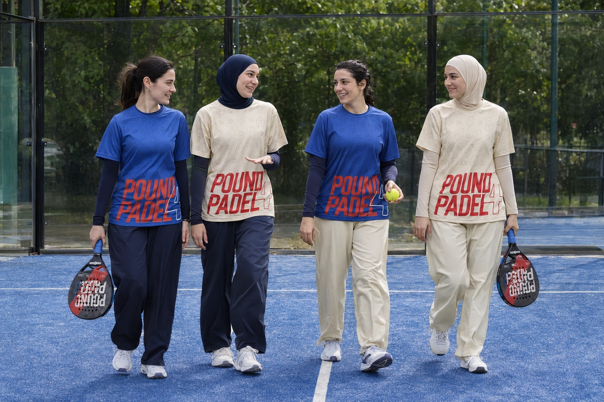

Если вы впервые
Начните со знакомства с правилами, хватом ракетки и простых розыгрышей. Опыт в теннисе не обязателен. Возможность вводной тренировки уточните перед визитом.
Женский день в POUND4PADEL. Встретиться с подругами, познакомиться с паделом и провести время на корте.

Начните со знакомства с правилами, хватом ракетки и простых розыгрышей. Опыт в теннисе не обязателен. Возможность вводной тренировки уточните перед визитом.
В падел обычно играют парами. Компания из четырёх человек позволяет начать дружеский матч. Если вас меньше, уточните у клуба варианты участия.
Разобрать подачу, движение и игру у сетки можно с тренером. Доступное время и формат занятий нужно согласовать с клубом.
Да. Для знакомства с паделом не нужен опыт в ракеточных видах спорта. Уточните у клуба, как организован первый выход на корт.
Если нужна компания для игры, уточните у клуба возможность присоединиться к группе. Подбор участников через этот сайт пока недоступен.
Время женского дня, стоимость, доступность тренера и инвентаря. Пятница обозначает день формата, но не конкретные часы записи.
Онлайн-запись пока не подключена. Время, стоимость и участие в женском дне нужно уточнить у клуба.
О первом посещении